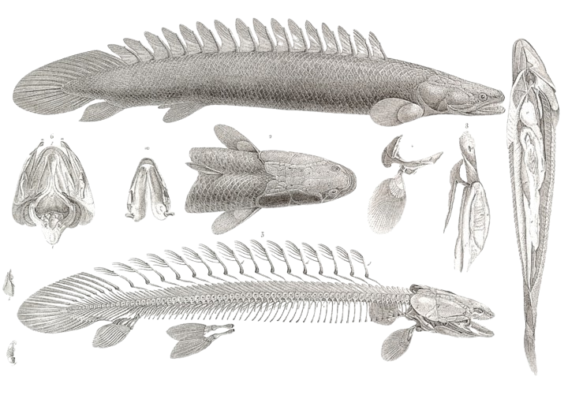
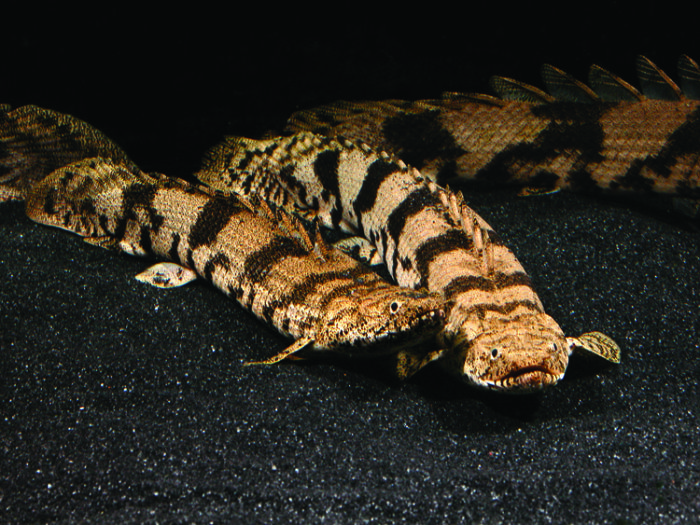
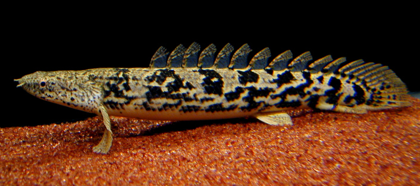
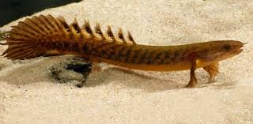
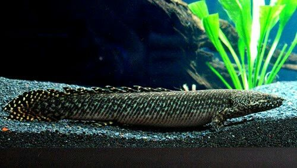

Polypterus

Genus
Polypterus adalah satu dari takson familiPolypteridae; Actinopterygii.
Di tanah air dikenal dengannama umum ikan “Palmas” sedangkan panggilaninterkomunalnya
disebut “Bichir”. Di daratan Afrika, ikanini menyandang nomenklatur sangat variatif
tergantungdari mana asal spesies originalnya. Fosil hidup
Polypterus dikenal di dunia sebagai buah hasil ekspedisi fenomenalke daratan
Mesir dan daratan medium Afrika yangdiprakarsai oleh Napoleon Bonaparte (Gillispie, 1989).
Dalam ekspedisinya mencari daratan kolonisasi, RajaNapoleon selalu membawa gloria biologis
ternama padazamannya, yaitu Geoffroy dan Hillarie dari Museum Naturelle d’Histoire dan Academie
Royale des Sciences (Fessy, 1998). Tujuan pendampingan selama ekspedisiekspansial Perancis
tersebut, untuk mengkarakterisasidan mengoleksi diversitas biotop yang ditemuinya
Distribusi spesiesnya sangat luas dengan sentrumdiversitas tepat di jantung Benua Afrika
(Roberts, 1975;Oteroet al ., 2006). Spesies-spesies Polypterus terkenalkanibalisme,
dan memakan insekta air, dan katak kecil.Di sisi lain, Polypterus
sangat resisten dengan perubahanhabitat, dan mampu bertahan hidup pada kondisi air yangekstrim.
Resistensi ini beralasan karena dibalut karaktermorfologi yang keras-kuat di mana evolusi
adaptatifnya jauh lebih tua dibandingkan dengan takson teleosteilainnya (Gosse, 1990).
MORFOLOGI IKAN PALMAS
Ikan naga, Polypterus, memiliki tubuh memanjang dengan satu susunan sirip punggung (finlet)
yang unik dan terdiri dari beberapa bagian dengan yang jumlah bervariasi antara 7-18,
di samping sirip punggung itu sendiri. Masing-masing finlet di punggung memiliki ujung-ujung bifida
(doubleedged), dan beberapa sirip hanya dengan duri keras, dan selebihnya sirip dengan duri-duri lunak.
Tubuh ikan Polypterus ditutupi oleh sisik-sisik ganoid seperti tulang dan trapesium yang tebal.
ikan naga Struktur rahang ikan naga, Polypterus, lebih menyerupai ikan tetrapoda daripada ikan teleostei.
Ikan naga juga memiliki beberapa karakteristik primitif lainnya, seperti sirip dada berupa daging yang
sekilas mirip dengan ikan bersirip lobus. Ikan Polypterus juga memiliki sepasang spirakel menyerupai
celah yang digunakan untuk menghembuskan udara, dua paru-paru dengan lempengan gular dan ventral ganda
(paru-paru kiri lebih kecil dari bagian kanan), yang memungkinkan ikan naga untuk mendapatkan oksigen
dari udara ketika berada di perairan dengan sedikit oksigen, dengan cara berenang cepat ke permukaan
dan kembali ke bawah.
HABITAT IKAN PALMAS
Pada observasi ekologi dan habitatnya, spesies-spesies
Polypterus umumnya ditemukan di perairan aliranlambat, rawa genangan, tepian sungai, dan
danau-danausemi tertutup yang dominan ditumbuhi vegetasi akuatik(Poully, 1993; Reichard, 2008).
Di habitat aslinya, “Palmas”hidup di dasar sungai yang sedikit keruh dan dangkalsebagai salah satu
faktor pendukung predasi. Secara globalmenyukai perairan dengan temperatur ekuatorial antara25°C–28°C
dengan pH netral hingga sedikit asam(Hanssenset al ., 1995).
Spesiesnya sangat toleran terhadap kualitas air dantemperatur yang rendah, toleransi ini diduga
kuat karenaproses adaptasi-evolusinya yang kuat sejak pertengahanMiosen (Britz, 2004). Parameter
lain, Patterson (1982)melaporkan bahwa umumnya Polypterus bersifat nokturnal,di mana aktivitas
predasinya dilakukan pada malam hari.Ikan ini sangat gesit mencari makan, dan mampumenghabiskan
satu malam hanya untuk mencari makan;berenang di dasar dan sesekali kepermukaan untukrespirasi.Polypterus
bersifat kanibal, tetapi cenderungmemangsa ikan-ikan kecil, serangga air, dan mini-amfibia.Joe (2004)
mendokumentasikan tingkah laku ini dalam
JENIS-JENIS IKAN PALMAS
Polypterus Endlicheri

Ikan palmas endlicheri ini faktanya tergolong palmas yang paling gampang
untuk kalian temui di market ikan hias.Ukuran badan maximal ikan ini yang
pernah ada dapat menyentuh panjang
70 cm sampai 100 cm. Selain itu ikan palmas jenis ini juga memiliki corak hampir
menyerupai pasir yang diselimuti corak hitam.
Polypterus delhezi

P. delhezi juga merupakan salah satu species palmas yang sudah banyak dibudayakan.
Delhezi memiliki warna dasar abu-abu kehijauan atau kekuningan, Delhezi juga memiliki
marking berupa garis vertical berwarna kehitaman. Tiap individu memiliki jumlah marking
yang berbeda. Semakin banyak marking tersebut, biasanya semakin mahal
Polypterus teugelsi

P. teugelsi merupakan palmas yang belum lama ini ditemukan (tahun 2004).
Palmas ini pertama ditemukan di daerah sekitar Kamerun dan awalnya diberi nama Polypterus sp.
“Cameroon”. Teugelsi memiliki tubuh berwarna kuning kecoklatan dengan marking hitam menutupi
hamper seluruh tubuhnya, sampai kita akan mengira bahwa hitam adalah warna dasarnya.
Selain itu Teugelsi memiliki perut yang berwarna orange, berbeda dengan species palmas yang
lain yang biasanya memiliki perut berwarna kuning pucat.
Polypterus ornatipinnis

P. ornatipinis merupakan salah satu species palmas yang banyak dicari,
karena merupakan palmas yang memiliki “marking” paling menarik.
Dengan warna dasar hitam dan marking kontras berwarna kuning berbentuk titik-titik,
tak heran Orna mampu menarik perhatian banyak orang. Tak hanya itu saja, marking kuning
yang dimiliki Orna bahkan sampai ke sirip renang, sirip dorsal (punggung) dan ekornya.
PENUTUP
Mengenal lebih jauh fosil hidup Polypterus danmembudidayakannya, berarti kita telah mencintai
spesiesplanet yang jauh lebih tua dari takson Teleostei lainnya.Warisan dunia ini membutuhkan
ekspansi budidaya untukmencegah dari bahaya kepunahan. Budidaya Polypterus
telahmemberikan warna tersendiri bagi corak diversitasspesies ikan hias Indonesia.
Polypterus adalah contoh yang menarik dari keajaiban alam yang hidup di antara kita.
Dengan sejarah evolusi yang panjang dan adaptasi unik mereka terhadap lingkungan, mereka
terus mempesona para pengamat alam. Melalui pemahaman dan upaya konservasi yang tepat, kita
dapat memastikan bahwa spesies yang menarik ini tetap ada untuk dinikmati oleh generasi mendatang.